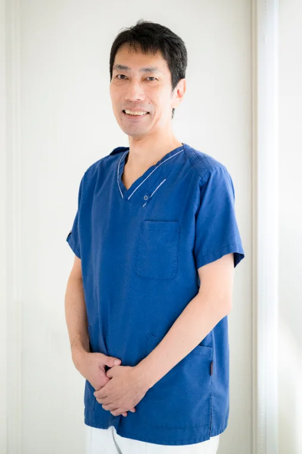

同じ担当者が、
最後まで診ます
担当医と担当衛生士を固定し、治療から定期メンテナンスまで同じ目で経過を追います。お口の変化を長く記録できることが、予防の精度につながります。
院長ごあいさつ

DIRECTOR
院長 岡本 光正
歯科医院は、痛くなってから行く場所だと思われがちです。ただ、実際に長く歯を残せている方の多くは、痛みのない時期から通われています。当院はその入口をできるだけ低くしたいと考えています。
治療方針は必ず画像を見ていただきながら説明します。専門用語は使わず、選択肢と費用、通院回数の見通しを先にお伝えします。迷われた場合は、その日に決めていただく必要はありません。
経歴・所属学会
- 2008
- 〇〇大学歯学部 卒業
- 2008 - 2012
- 〇〇大学附属病院 歯科 勤務
- 2012 - 2020
- 都内歯科医院にて分院長を務める
- 2021
- 大森歯科クリニック 開院
所属学会・資格
- 日本〇〇学会 会員
- 日本〇〇歯科学会 認定医
- 厚生労働省 認定〇〇研修 修了
診療にあたって大切にしていること
-
01
今日の処置と、次にすることを毎回お伝えします。
-
02
自費治療をすすめる場合も、保険での選択肢を必ず併記します。
-
03
痛みが不安な方には、麻酔の前段階から順を追って進めます。